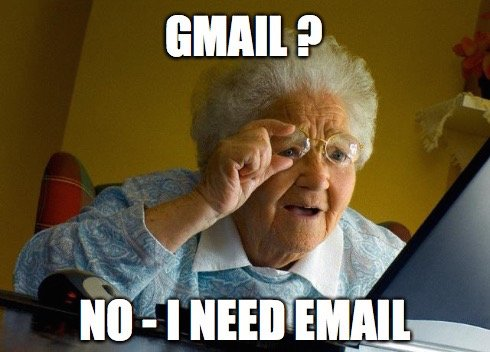

Um was geht es?
- Datendiebstahl
- Datenveränderung
- Computersabotage
- Computerbetrug
Internetnutzung
- (fast) jeder nutzt das Internet

Internetnutzung
- das Internet wird für (fast) alles verwendet
- zum Beispiel:
- Soziale Netzwerke
- Shopping
- Banking
Internetnutzung
- oft geht es um sicherheitskritische Daten
- zum Beispiel:
- Privatsphäre & Datenschutz
- Geld Transaktionen
- Identitätsdiebstahl
Webanwendungen
- sind von überall erreichbar
- nicht wie ein Bankautomat
- IT-Sicherheit ist keine Einstiegshürde
- jeder kann mit einem Tutorial einen Webshop schreiben
Unsichere Webanwendungen
- selbst die Größten sind nicht sicher
- man hört immer wieder von Datenleaks oder Einbrüchen
- größere Webanwendungen sind attraktivere Ziele
Attraktive Ziele
- einige Ziele sind sehr attraktiv
- Twitch
- Facebook
- Banken
- Passwortmanager
- dies liegt
- an der Größe
- an den verwalteten Daten
- nicht lukrative Ziele müssen trotzdem sicher sein!
Nachteile von Security
- Security bringt Nachteile mit sich
- konkurriert mit der Benutzbarkeit
- zwei Faktor Authentifizierung (2FA)
- höhere Entwicklungskosten
- komplexere Architektur
- höherer Ressourcenverbrauch
Wie viel Sicherheit brauche ich?
- "it depends"
- es kommt an auf
- die Anforderungen
- das Budget
- die Domäne
- rechtliche Rahmenbedingungen
- Security ist eine Qualitätsanforderung
Mindestmaß an Security
- nicht immer die wichtigste Qualitätsanforderung
- ein Mindestmaß muss vorhanden sein
- dieses Mindestmaß schauen wir uns nun an